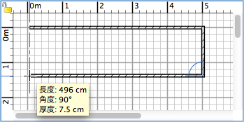

| 繪製牆體 | |||
如果您要繪製牆體，請在功能表上選擇平面圖→繪製牆體或者在工具列上選擇“繪製牆體”工具。
將滑鼠指標移到平面圖中，在牆體的起點處按一下，然後將指標移動到牆體的另一端並按一下或按兩下。在您按兩下滑鼠或按下 Escape 鍵之前，按一下滑鼠的操作將同時指定當前繪製牆體的終點和下一道牆體的起點。當繪製一系列的牆體時，如果您將牆體的起點定位在了一道現有牆體的起點或終點上，那麼您當前繪製的牆體就會在這一點上與該牆體連接；如果將牆體終點定位到另一道牆體的起點或終點時在該點上按兩下滑鼠，也會令當前繪製的牆體與該牆體在這一點上連接。所有定位牆體的點都位於對應牆體的中線上；新繪製牆體的厚度和高度可以在“參數設置”對話方塊中進行更改。  如果您想結束牆體的繪製，請使用平面圖→選擇功能表項目或者工具列上的“選擇”工具。
|
|